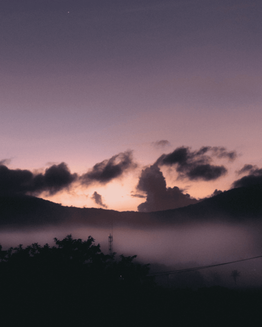
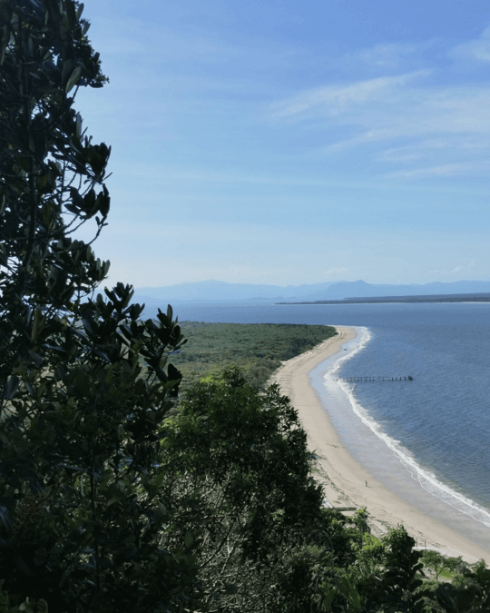
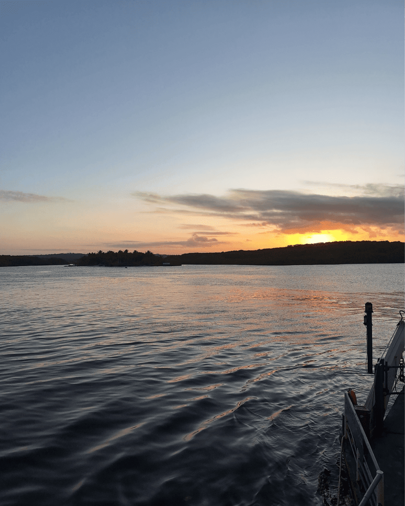

Aproveitei o mês sem aula para descansar um pouco e aprender coisas novas para aprimorar os meus projetos pessoais.
O projeto onde mais me dediquei durante as férias foi o novo layout do meu site, onde uniu o conteúdo do meu jardim digital e os meus projetos em uma coisa só. Não irei me aprofundar muito aqui pois já publiquei um artigo sobre o processo de criação dele.
Uma das coisas mais bacanas que consumi neste mês foi Invencível (2021). Com o lançamento da segunda parte da 2° temporada, decidi acompanhar o desenho, e que ótima escolha. A animação é frenética com personagens muito carismáticos. Me deu vontade de voltar a ver animes.
Deixei a leitura um pouco de lado, como eu costumava ler durante a ida aos Campus onde estudo (além de eu ter passado muito tempo rolando feed nas redes sociais, acabei me deixando passar nessa questão).
Falando em redes sociais, decidi postar algumas coisas do meu projeto pessoal posterpack no insta. Apesar de passar raiva com a questão da compressão dos conteúdos no Android, foi uma experiência divertida. Quem sabe tento fazer alguns reels no futuro
Voltando ao assunto leitura, no fim do mês comecei a ler 14 Hábitos de Desenvolvedores Altamente Produtivos, do Zeno Rocha. Estou no comecinho, mas já tive boas dicas para desenvolver melhor os meus projetos.
Também dei uma olhada em umas coisas de React durante o mês. Estive pensando em refazer meus projetos pessoais usando a ferramenta, acho que irá agregar bastante as minhas skills e melhorar a manutenção dos projetos.

Foto: Ernandes Jr. / Coaraci - BA
Assisti ótimos filmes este mês:
Dune: Part Two (4.5/5): Assistir no cinema foi uma experiência única. Achei muito melhor que o primeiro filme em todos os aspectos.
John Wick: Chapter 4 (5/5): Me arrependo de não ter assistido no cinema quando lançou. Ele é esteticamente lindo com lutas bem executadas.
Aftersun (3.5/5): Eu gostei, mas acabei criando muita expectativa por conta do quão bem falam dele. Achei uma obra triste e reconfortante ao mesmo tempo.
Fevereiro foi bem rotineiro. Finalizei mais um ano letivo no IF (falta o último ano). Festei alguns aniversários (um até demais). Me despedi de alguns amigos que se mudaram por conta dos estudos, e comemorei o carnaval “longe dos perigos noturnos”.
Voltei a - lentamente - ler. Escolhi o primeiro romance de Fernando Sabino “O Encontro Marcado”. Li 1/3 dele, e já posso dizer que é uma das coisas mais diferentes que já consumi, sua escrita possui um ritmo autêntico e atual, tanto que, só fui saber depois que se tratava de uma obra de 1956. Espero terminá-lo logo.
Março entrarei de férias, portanto, espero colocar em prática as coisas que comentei em janeiro, e outras que pensei nesse mês.

Foto: Clara Figueiredo / Ilha do Mel - PR
Adicionei SFX no Scot Scot
Atualizei a UI do meu site pessoal
Rascunhei a interface de um projeto que verifica o quanto de água tem em uma caixa d’água.
Não vi muitos, mas os que eu vi foram ótimos, destaco:
Good Will Hunting (1997) [4.5/5]: Me deu vontade de estudar kk.
The Iron Claw (2023) [4.5/5]: "little women for boys".
Poor Things (2023) [4.5/5]: É bom mesmo.
Foi um bom início de ano. Aproveitei o tempo sem aula para viajar, tanto que, quase não estive em casa durante o mês. Isso fez com que eu não tivesse muito tempo de produzir. Felizmente, planejei bastante coisa.
É uma ideia parecida com o que eu já escrevi neste post, férias pode - e deve - ser uma recarga criativa.
Estou com algumas metas envolvendo projetos pessoais e criação de conteúdo em outros formatos. Algo que facilita a execução de ambas as coisas é que elas são complementares, então na teoria, não terei dificuldade em balancear o foco.

Foto: Arquivo Pessoal / Porto Seguro - BA
Publiquei a versão 1.0 do guia sobre criação de um repositório no github usando git.
Melhorei a interface dos meu projeto pessoais: LCC e posterpack.
Fiz correções e melhorias no Scot Scot.
Assisti 15 filmes neste mês. Entre os destaques:
Do the Right Thing (1989) [4.5/5]: Primeiro filme do Spike Lee que vejo, e o Chorão estava certo - é verdadeiro, complicado, mal humorado e violento.
Willy Wonka & the Chocolate Factory (1971) [4.5/5]: O fator mágico desse filme é cativante e te impulsiona até o final, mesmo que você já saiba o que irá acontecer.
Eu Sei que Vou te Amar (1986) [4/5]: Uma obra com boa narrativa, elenco e estética.